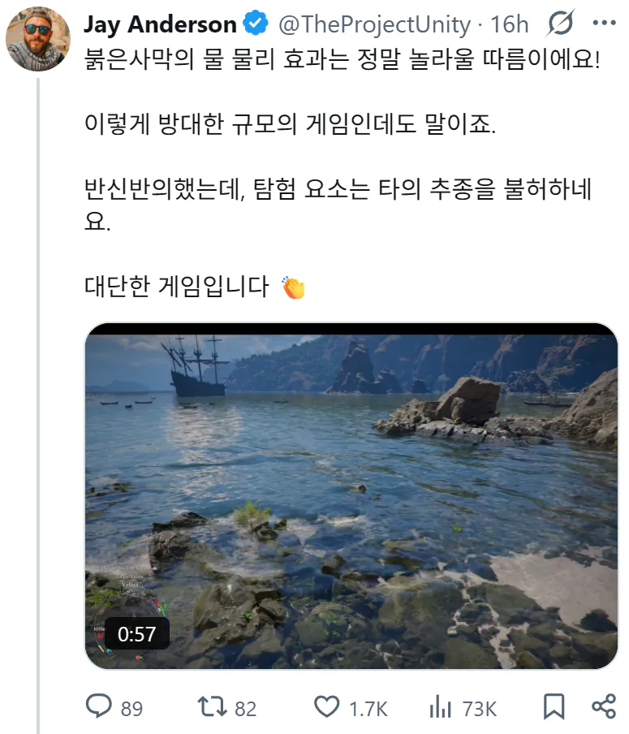

표독한거 덱스터 배우 사진인가?
그러네 ㅋㅋㅋ
글로벌서버게임 하면 흔히 듣는 문구인 "나가서 잔디 좀 만져라"는 "전 당신에게 패배했습니다"라는 뜻이라고 한다.
난 이 말을 굉장히 좋아한다
한국에는 동일한 단어로 '왤케 화남?' 이 있음
니가 잔디를 만지러 나가야 내가 그 시간동안 너보다 강해진다 라는 뜻ㅋㅋ
자매품 - 이건 그저 게임이야!
저는 제 잔디로 만족하겠습니다
밖에 좀 나가라 겜창새끼야 정도의 뉘앙스 ㅋㅋ
양관상학 1승
지얼굴아닌데
꼽주지 마라 병신아의 가장 점잖은 표현
왜 난 답글이 병신 ㅋㅋㅋ 로 읽히냐 ㅋㅋㅋㅋㅋㅋㅋ
쉴때는 집에좀 있자고ㅋㅋㅋㅋ
대신 실제 세상을 탐험해 보는게 어때요? (영화배우 프사로 해놓고 트위터를 하며)
"지금 탐험하러왔잖아"
병신ㅋㅋ 를 좋게말해주시네
이세게도 와바야지
알아요. 얼른 다음 편을 찍어달라고요
??? : 그러니까 겜 그만하고 후속편 올리라구요
여유 있게 받아치는 쪽이 결국 이기는 거 보면 멘탈이 제일 중요하네 ㅋㅋ 보는 내가 다 시원하다
그놈의 터치 그라스ㅋㅋㅋ
근데 '게임'은 '게이머'인데, 왜 '일침'은 '일침러'지?
뒤에건 신조어니까...? 잘은 모르겠지만 갤러 에서 온거려나
마비노기에서 옴
일치머는 어감이 안살자너
프사만 봐도 밖에 존나 돌아다닐 것 처럼 생겼는데 ㅋㅋㅋ
프사부터 여유 넘치는 사람과 프사부터 표독한 사람